UX / UI Case Study
Stittsville Shooting Ranges
A full website redesign and UX/UI strategy project — from audience research and competitive analysis through to a five-page, fully responsive hi-fi build.
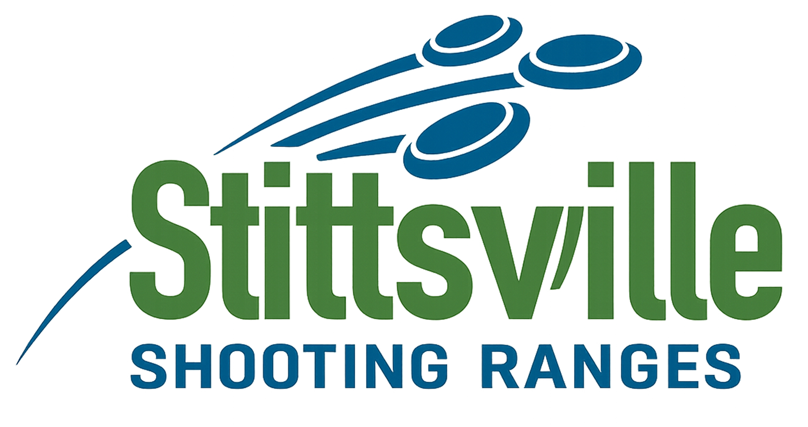
01 — The brief
A range built for serious practice, but confusing to book
Stittsville Shooting Ranges needed a website redesign that could serve three very different audiences under one roof: competitive regulars who train constantly, corporate groups booking one-off team events, and social first-timers trying the sport for the first time. The existing site treated them all the same way — this project set out to fix that through research-driven UX before touching any visual design.
02 — Research & personas
Three very different shooters
Audience research surfaced three distinct user types, each with different goals, frustrations, and expectations of the website — the foundation the rest of the redesign was built on.
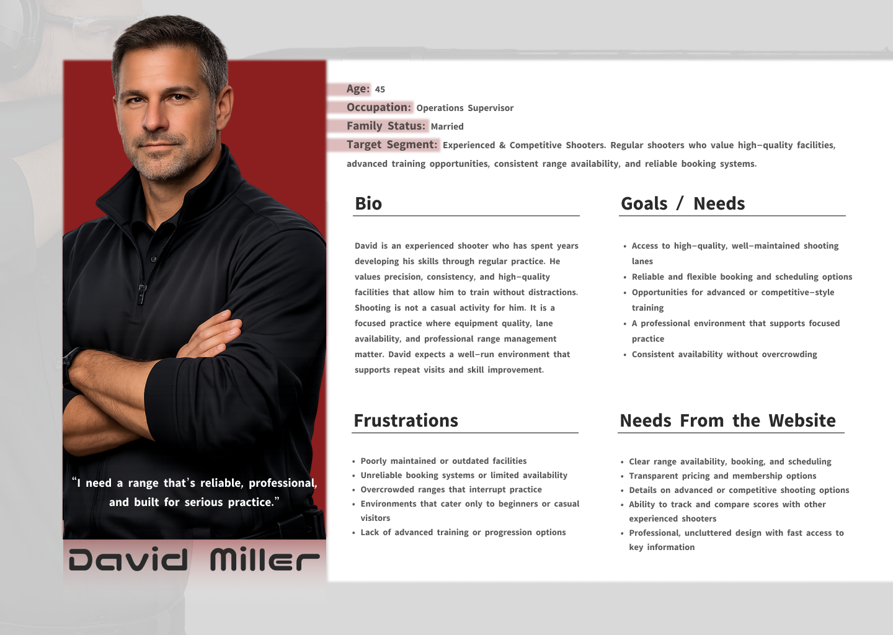
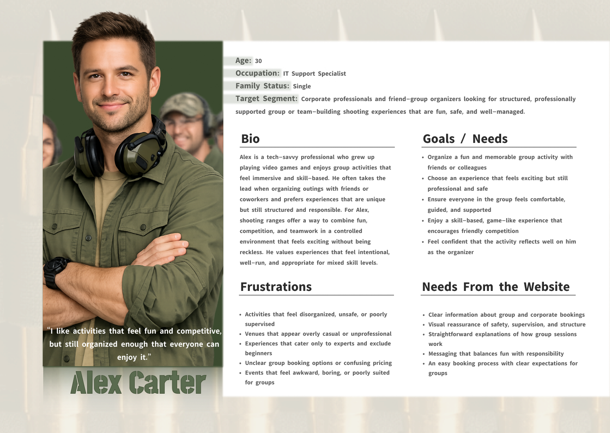
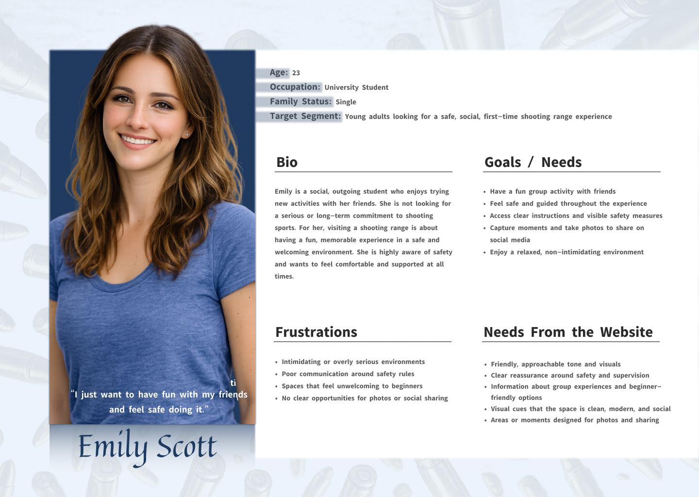
03 — Visual exploration
Three moodboard directions
Before committing to a direction, I explored three distinct visual languages for the brand — each paired with a full style tile of buttons, colour swatches, and iconography to pressure-test how it would hold up as a real interface.
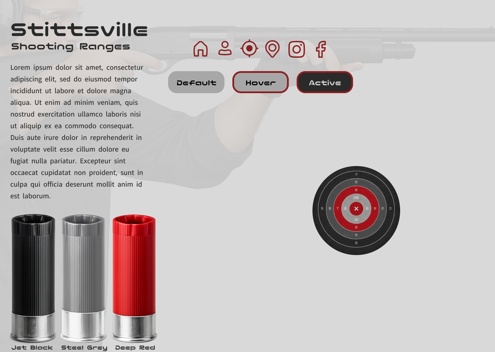
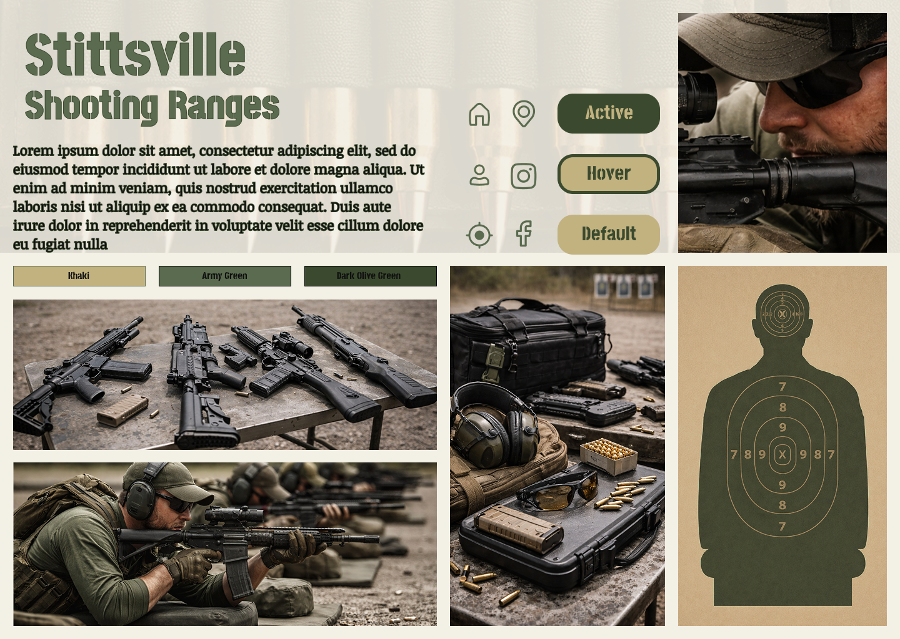
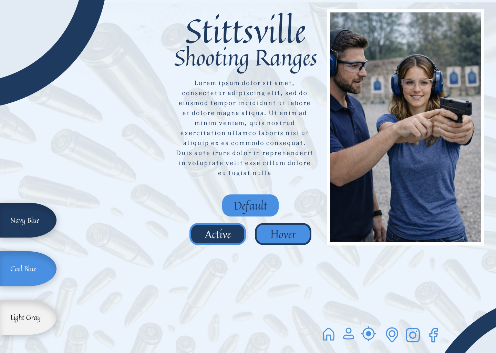
The tactical/rugged direction won out — navy and olive read as professional and safety-focused without tipping into the colder, corporate feel of the all-navy option, or the aggressive edge of the black-and-red direction. That palette carried through to every screen that followed.
04 — Low-fidelity wireframes
Structure before style
Three homepage layout iterations, worked through in greyscale, to settle information hierarchy — booking, announcements, and membership CTAs — before any visual design decisions were made.
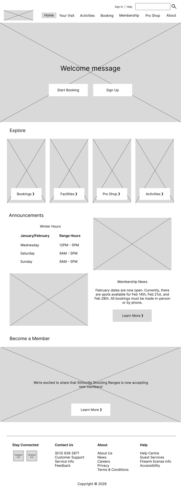
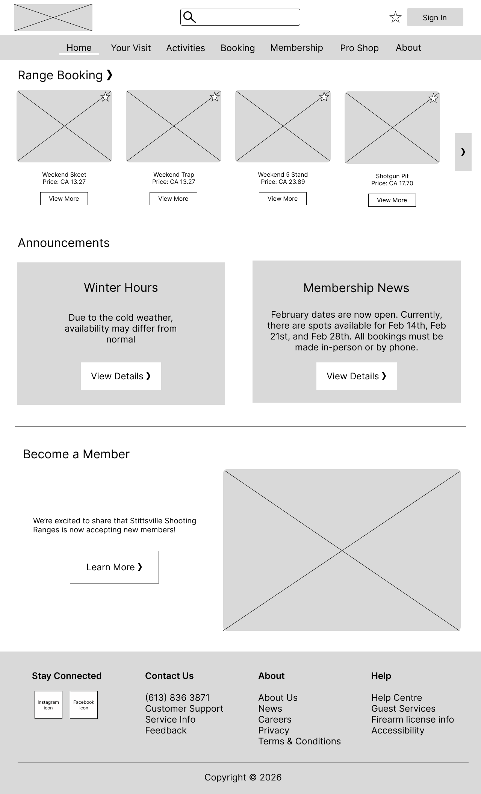
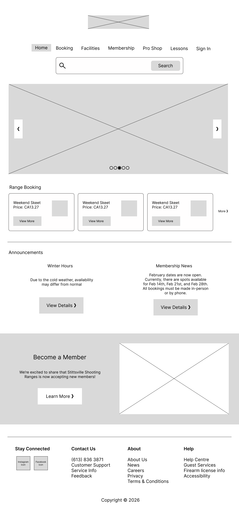
05 — Final UI, desktop
A five-page responsive build
Home, Plan Your Visit, Programs, Contact, and an Account/Membership dashboard — a consistent nav, card pattern, and navy/olive/cream palette carried across every page.

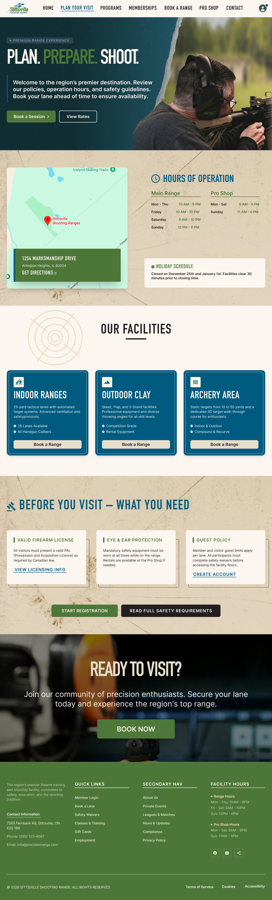
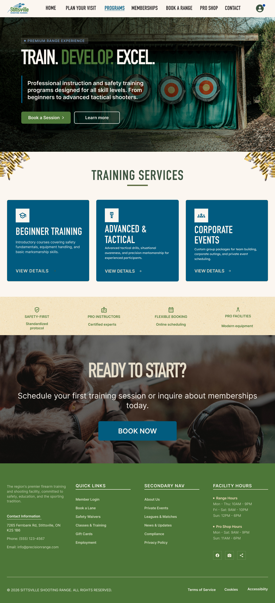
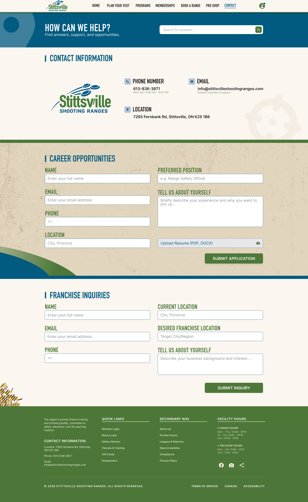
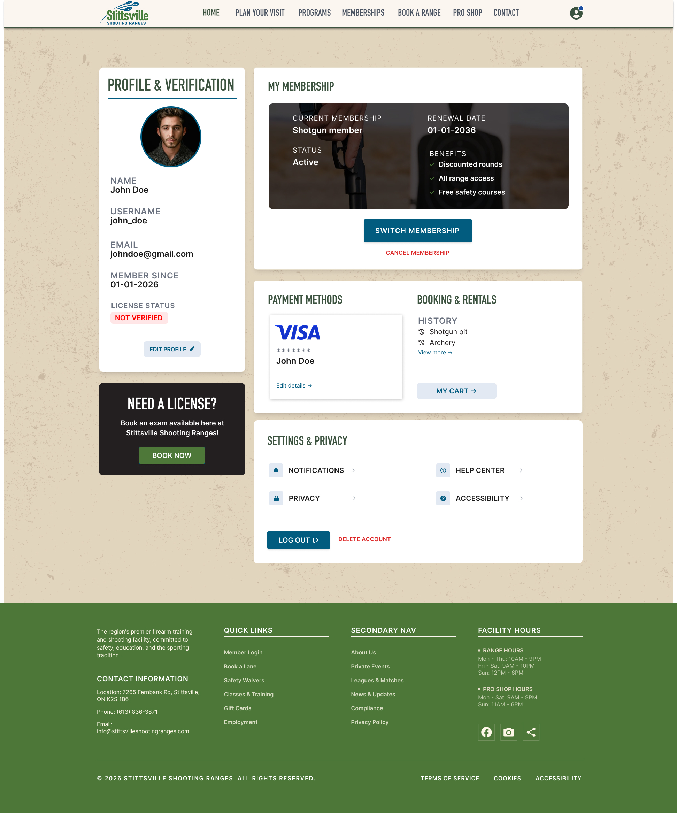
05 — Final UI, mobile
Responsive from the ground up
Every page was rebuilt for mobile, not just scaled down — stacked booking cards, a collapsed nav, and touch-friendly forms.
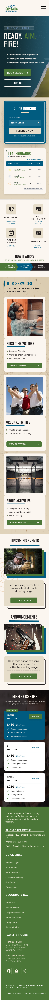
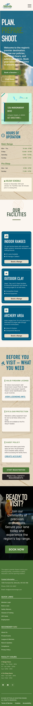
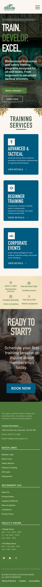
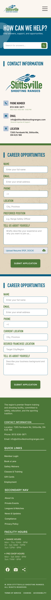
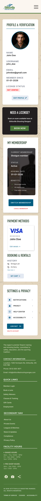
06 — Reflection
What this project reinforced
Testing three moodboard directions before committing meant the final visual system had a reason behind every choice, not just a preference — that's the habit I carry into every brand or product project since.
Next project